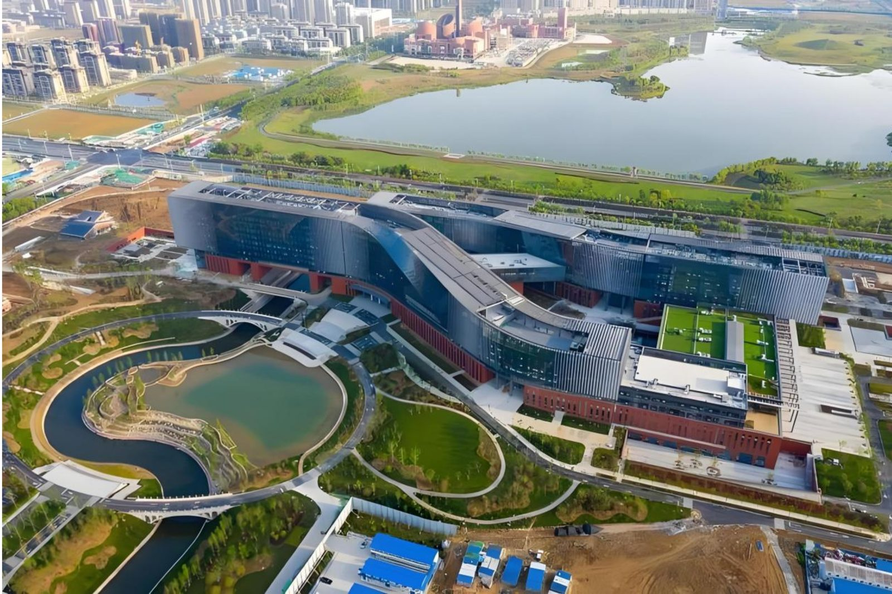
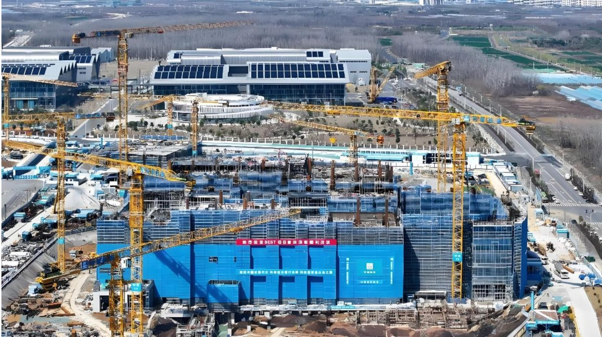
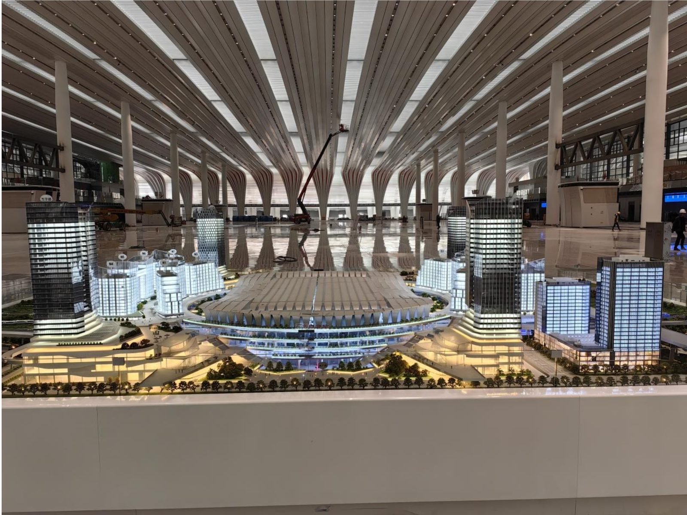

Five projects where acceptance — not just delivery — was the test: a national gateway airport, a 620,000 m² science park, a quantum research academy, a fusion experiment campus and a rail hub carrying a million passengers a day.
All five projects were supplied in China and each one closed with a formal acceptance: civil aviation standards at Daxing, a special acceptance for the science park and the fusion campus, a full-cycle verification at the quantum academy, and fire acceptance under railway codes at Baiyun Station. The equipment ranges are the ones we export — extinguishers, hose and couplings, hydrants and valves, sprinkler and water-system components, clean-agent suppression and alarm devices.
They also show where the difficulty usually sits: not in a single product, but in matching one supply scope to several different risk profiles on the same site, and in keeping false alarms low enough that the building can keep operating.
An international hub designed for 100 million passengers a year leaves almost no tolerance in its fire systems. At Beijing Daxing International Airport the answer was to put proven equipment into the terminal, the airfield zone, the information centre and the energy station — and then pass acceptance against civil aviation standards.
Daxing is one of the largest international aviation hubs in the world and is often described as one of the "new seven wonders of the world": a national growth engine and a front door to the country. Total investment was around RMB 80 billion, the design target is 100 million passengers a year, and the programme produced more than 40 international and domestic firsts with a domestic content rate above 98%.
As a national landmark, it applied the highest domestic safety and quality standards from design through construction to equipment procurement — placing requirements on every category of technical equipment, including fire protection, well beyond those of ordinary public buildings.
The highest safety class. A hub with this density of people turns any fire system failure into a public-safety event, not simply a property loss. Certification, performance redundancy and reliability verification were all set at the top of the industry's requirements.
Very large spaces, very different risks. The terminal core is a long-span open volume, while the airfield zone, information centre and energy station each carry entirely different fire profiles. One product system had to suit all of them — a serious test of compatibility.
Speed against false alarms. Airport operations cannot stop: one false alarm is expensive in disruption, while a real fire must be answered in seconds. That contradiction turned "stability" into a hard specification.
For these reasons the core fire equipment at hubs of this class had long been supplied by imported brands. Entering required more than passing a product test — it required full-cycle qualification.
Sprinkler system equipment — the suppression layer for large spaces and functional areas: detection and alarm devices configured differently for tall terminal volumes, connecting corridors and underground zones, with low false-alarm design to protect operating order.
Hydrant and water system equipment — end-of-line water supply: indoor and outdoor hydrants, fire hose, nozzles and couplings, giving the terminal reliable nearest-point water for first response.
The elements work as one chain — zone suppression, pipework delivery, end discharge — with the stability and compatibility each zone requires.
During execution the full supply scope was delivered, installation was supported and commissioning completed as contracted. The project passed civil aviation acceptance on the strength of high stability, high compatibility and a low false-alarm rate — domestic equipment behind the fire safety of the country's new gateway.
“Product quality on arrival matched the contract, technical parameters met the design requirements, and on-site technical support responded promptly.” Project stakeholder feedback
Offices, R&D laboratories, pilot production workshops and retail units inside one park: which standard applies? At KeDa Silicon Valley High-Tech Incubation Park the answer was not a single standard but a configuration per scenario — automatic alarm, clean-agent suppression and emergency evacuation working together across 620,000 m².
The park is the core carrier of Anhui province's "KeDa Silicon Valley" strategy and a national-level high-tech incubation platform. It is laid out around the USTC high-tech campus and focuses on quantum information, artificial intelligence, integrated circuits, biomedicine and smart information services, building a cluster for quantum industry and a base for alumni start-ups and technology transfer.
Phase 1 covers about 149 mu with 345,800 m² of floor area; Phase 2 covers about 125 mu with 278,400 m². Both are provincial smart-construction demonstration projects. Construction started in July 2023, the Phase 1 structure topped out in December 2024 and Phase 2 in August 2025, and Phase 1 passed its special acceptance in January 2026. Once fully operating, the park is projected to reach RMB 3.75 billion in annual output value.
Mixed occupancy. Offices are densely occupied, laboratories hold precision instruments, pilot workshops carry process risk, and retail traffic fluctuates. Fire behaviour, extinguishing media and evacuation logic differ in each — one package could not cover them all.
Exact standards. As a national platform for quantum information and integrated circuits, the park required high stability, high compatibility and low false alarms. Research equipment is valuable and runs continuously, so a false alarm can cost more downtime than the fire itself.
Scale and programme. More than 620,000 m² built in two rolling phases meant supply, installation and commissioning had to mesh precisely with civil and MEP progress — any delay would propagate through the whole chain.
Automatic fire alarm — differentiated devices by space type and risk level across offices, laboratories, workshops and retail areas, with low false-alarm design so that an alarm is worth acting on.
Clean-agent suppression — the non-destructive line for laboratory areas dense with precision instruments: an agent that leaves no residue and does not damage equipment.
Emergency evacuation — the last route out: emergency lighting and evacuation indication across every building, giving continuous guidance inside a complex of this size.
Together with the park's indoor and outdoor hydrant network, the systems form one sequence: early warning, zone suppression, orderly evacuation.
Phase 1 passed its special acceptance in January 2026. Across both phases our supply and on-site service tracked the construction programme, giving the park compliant fire safety hardware for its operating phase.
“Product quality on arrival matched the contract, the supply schedule met the two-phase construction programme, and on-site technical support responded promptly.” Project stakeholder feedback

Precision quantum experiments are extremely sensitive to disturbance. A false discharge, or an extinguishing agent that leaves residue, can cost far more than the fire itself. This case covers the fire equipment supplied to the CAS Innovation Academy for Quantum Information and Quantum Science.
Founded on 30 November 2016 in Hefei, the Academy is a core platform of the national quantum strategy, built on a national-laboratory model and relying on the University of Science and Technology of China. It brings together more than 1,800 researchers working on quantum communication, quantum computing and quantum precision measurement.
In April 2024 the institute delivered a 504-qubit superconducting quantum computing chip, and its "Tianyan" quantum computing cloud platform is open to users worldwide — a marker of how far the country's quantum research has advanced.
Zero tolerance for contamination. Instruments in precision laboratories and supercomputing rooms are highly sensitive to dust and corrosive residue; the extinguishing agent must be non-contaminating.
False alarms are extremely expensive. Experiment cycles are long and equipment is costly, so an unintended discharge and the interruption that follows are hard to quantify. The system must be low false-alarm with a fast, accurate response.
A high entry threshold. The project had long used imported fire brands, with reliability verification running through the entire project cycle. No domestic fire brand had been admitted before.
Non-contaminating suppression for precision laboratories, supercomputing rooms and research offices: clean agent with no residue, matched to high-precision instrument environments, extinguishing without damaging research equipment.
Low false alarm, fast response: products tested across the full project cycle, protecting safety while minimising disruption to research activity.
Full-area coverage: one supply scope from precision laboratories to research offices, protecting both the facilities and their core equipment.
Hong'an became the domestic fire protection brand admitted to this national research project — a breakthrough for domestic high-end fire equipment in the quantum field. Products passed full-cycle stringent testing and acceptance, protecting the facilities and core equipment of the quantum research programme.
“Products passed the full-cycle stringent testing and acceptance, performance matched the contract, and supply and technical service met the project schedule.” Project stakeholder feedback

A fusion main device is expensive and its electrical systems are dense. For infrastructure at this level the fire system has to do more than extinguish a fire — it has to leave the equipment intact. This case covers the supply to the BEST Campus, including the experimental research centre building and associated structures.
The site is a national frontier fusion research infrastructure. It contains the fusion main device, core research laboratories, precision electrical rooms and supporting research offices — several distinct high-risk buildings on one campus, all supporting fusion energy research.
The device must not be damaged. The main device and core instruments are precise and costly, so the agent must be clean, residue-free and non-corrosive. Water-based suppression is not usable in the core areas.
Very high electrical load. High- and low-voltage precision control rooms are distributed across the site, with dense ignition points; an interruption can cost an entire experiment.
Stricter standards. The project had to satisfy both the national GB mandatory fire code and fusion research special-industry fire standards — well above ordinary building codes.
Campus-wide water supply: a full range of CCCF-certified equipment — indoor and outdoor hydrants, pump adapters and a dedicated valve network — maintaining stable fire water pressure across the site at all times.
Clean-agent suppression for the core areas: piped and cabinet HFC-227ea and IG-541 systems for the main machine room, high- and low-voltage control rooms and core instrument laboratories. The agent is clean and residue-free and does not corrode precision equipment, which suits the special fire and explosion protection requirements of fusion facilities.
Intelligent warning and full-area protection: intelligent alarm valve assemblies, smart end-of-line test devices, auto-tracking fire monitors and a complete set of emergency extinguishing equipment.
Together they form one system: intelligent early warning, zone-accurate suppression, full-area protection.
The project followed the national GB code and fusion special-industry fire standards throughout. All supplied products are traceable, held under full process compliance control and carry CCCF certification, and the project passed its special fire acceptance.
“Product quality on arrival matched the contract, technical service responded promptly, and the project completed its special fire acceptance on schedule.” Project stakeholder feedback

A railway station carrying more than a million passengers a day cannot stop operating for a fire test. At Guangzhou Baiyun Station — 453,000 m² across an elevated waiting hall, platform level and transfer level — the fire system had to cover the whole station without interrupting it.
Large volume, many points. Multi-level functional areas are connected vertically, so the hydrant system has to reach the entire station, and the valves and fittings in that network must be stable and consistent.
Core areas cannot stop. A fire in a communication machine room or signalling equipment room cannot be fought with water; gas suppression matched to railway codes is required.
Strict standards. The project had to meet both national GB codes and railway TB standards, with CCCF certification for every product supplied.
Station-wide water supply: indoor and outdoor hydrants, pump adapters, valves and pipe fittings covering the whole station network and keeping the water source stable.
Gas suppression for core electrical areas: piped HFC-227ea and IG-541 systems for communication rooms, signalling rooms and similar areas, matched to railway fire codes and leaving no secondary damage to equipment.
Intelligent warning and end-point response: auto-tracking water monitors, smart end-of-line test devices and a full range of portable and trolley extinguishers.
Together they form a three-layer system: water suppression, gas suppression and intelligent warning.
The project was executed to national GB codes and railway TB standards, with CCCF certification across the supplied range, and passed fire acceptance — high-reliability, full-scope fire safety for a hub of this size.
“With a tight supply window and scattered delivery points, 100% of products passed on-arrival inspection and installation support responded promptly, which helped Baiyun Station pass fire acceptance on schedule.” Project stakeholder feedback
Send the scope, the standards that apply and your quantities — we will come back with a product package, certification list and lead time.